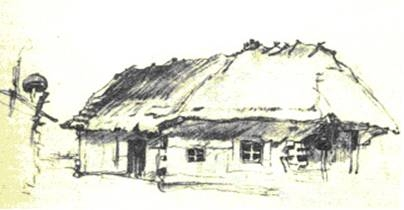

Здається – кращого немає нічого в Бога, як Дніпро та наша славная країна…

Тарас Григорович Шевченко народився 25 лютого (9 березня за новим стилем) 1814 р. у селі Моринцях Звенигородського повіту Київської губернії (нині Звенигородський район Черкаської області) у родині Григорія Івановича Шевченка і Катерини Якимівни Бойко.
Селянська родина. Олія. н.р. травень 1843
Батьки Шевченка були кріпаками магната генерал-лейтенанта Василя Васильовича Енгельгардта - поміщика, що володів 50 тис. кріпаків і був власником близько 160 тис. десятин землі. До володінь Енгельгардта належали також села Моринці і Кирилівка, де проходило дитинство малого Тараса.
Через рік після народження Тараса родина переїздить із Моринців до Кирилівки. У родині, крім Тараса, було 6 дітей - старші сестри Катерина та Марія, брат Микита, молодші сестри Ярина, Марія, брат Йосип. У 1843 року Шевченко змалює хату у Кирилівці, де провів своє дитинство.
Батьківська хата в с.Керелівка. Т.Шевченкo. Олівець. Вересень 1843
У восьмирічному віці батько віддав Тараса до школи до кирилівського дячка-вчителя Павла Рубана.
В 1823, коли Тарасу було дев'ять років, померла мати. Батько одружився в друге на Оксані Терещенко, яка сиріт не взлюбила.
В 1825 році помер і батько Тараса. Залишившись сиротою, малий Тарас деякий час жив у дядька Павла, що став опікуном сиріт. Тут йому довелося пасти свині, працювати разом з наймитами.
Тарас не витримує такого життя і переходить школярем-попихачем до кирилівського дяка Петра Богорського, де його життя було напівголодним. Звідти він тікає у Лисянку до диякона-живописця. Тут йому довелось великими відрами носити воду із річки Тікач і розтирати фарби. На четвертий день Тарас утікає у село Тарасівку до дяка-маляра, але дяк відмовив йому. Втративши надію стати маляром Тарас повертається до Кирилівки і пасе громадську череду. У 1827 році Шевченко наймитував у кирилівського священника Григорія Кошиця.
З ранніх років Тарас цікавився народною творчістю, у дяків він навчився читати і писати. Рано виявився у хлопця хист до малювання, який помітив маляр з села Хлипнівці, але Тарасу було вже чотирнадцять років і його зробили козачком П. Енгельгардта.
Восени 1829 року разом з обслугою Енгельгардта Шевченко виїздить до міста Вільно. Помітивши нахил козачка до малювання Енгельгардт віддає Тараса вчитися до досвідченого майстра, можливо, Яна Рустемаса.
У 1831 році сімнадцятирічний Шевченко приїздить до Петербурга, куди було переведено Енгельгардта. У 1832 році Енгельгардт законтрактував Шевченка на чотири роки Ширяєву - різних живописних справ майстру.
У 1836 році Шевченко у складі артілі Ширяєва розписує театр у Петербурзі. У цьому ж році він знайомиться з учнем Академії мистецтв Іваном Сошенком. Пізніше відбувається знайомство художника-кріпака з Гребінкою, Григоровичем, Венеціановим, Жуковським, Брюлловим.
У лютому 1837 року Товариство заохочення художників дозволило Шевченкові (неофіційно) відвідувати навчальні класи.
У квітні 1837 року Брюллов створює портрет Жуковського, який був розіграний у лотереї за 2500 карбованців. За ці гроші було викуплено Тараса Шевченка з кріпацтва. 25 квітня 1838 року на квартирі Брюллова йому була вручена Жуковським відпускна.
(1837-1843) Тепер Шевченка було офіційно зараховано "стороннім учнем" до Академії мистецтв. Український митець з великою жадобою слухає лекції в академії, багато читає, користується бібліотекою Брюллова, пише вірші, відвідує театр, виставки, музеї - швидко здобуває знання. У 1838 році Шевченко знайомиться з художником Штернбергом. У січні 1839 його зарахували пансіонером Товариства заохочення художників. У квітні цього ж року Шевченка нагородили срібною медаллю 2-го ступеня за малюнок з натури. У 1840 році його нагороджено срібною медаллю 2-го ступеня за першу картину олійними фарбами "Хлопчик-жебрак дає хліб собаці".
Одночасно митця захоплює літературна творчість. У 1837 році була написана Шевченком балада "Причинна", у 1838 - поема "Катерина", елегія "На вічну пам'ять Котляревському", у 1839 - поезія "Тополя", "До Основ'яненка". У 1840 році побачила світ збірка творів Шевченка "Кобзар", що містила вісім творів: "Думи мої ...", "Перебендя", "Катерина", "Тополя", "Думка", "До Основ'яненка", "Іван Підкова", "Тарасова ніч". У 1841 році вийшов альманах "Ластівка", де було вміщено п'ять творів Шевченка: баладу "Причинна", поезії "Вітре буйний", "На вічну пам'ять Котляревському", "Тече вода в синє море...", перший розділ поеми "Гайдамаки" - "Галайда", та окремим виданням вийшла поема "Гайдамаки".
Катерина. Олiя Лiто 1842
У вересні того ж року Шевченка відзначено третьою срібною медаллю 2-го ступеня за картину "Циганка-ворожка". З під рук Шевченка виходять малюнки "Козацький бенкет" - 1838, "Натурниця" - 1840 та низка портретів. Він ілюструє чимало художніх творів. У 1840 "Марія" - малюнок до поеми О. С. Пушкіна "Полтава", 1841 - до оповіданнь Квітки-Основ'яненка "Знахарь", Надєждіна "Сила волі", 1842 -"Зустріч Тараса Бульби з синами" до повісті "Тарас Бульба". Визначним твором цього періоду є картина олійними фарбами "Катерина", 1842 рік.
(1843-1847) Минуло чотирнадцять років з часу, коли Шевченко виїхав з України. 19 травня 1843 року Шевченко разом з Гребінкою їде на Україну. Зупинився Шевченко в Качанівці, яка належала Тарновському. Із Качанівки поет виїздить до Києва, де виконує кілька малюнків історичних пам'яток. Під час перебування у Києві він познайомився з Михайло Максимовичем, П.О.Кулішем та з художником Сенчило- Стефановським, з яким вони у 1846 брали участь у розкопках могили Переп'ятихи біля Фастова. Із Києва Шевченко поїхав до Гребінки в "Убіжище" біля Пирятина, а звідти до Мойсівки (тепер Мосівка Драбівського району на Черкащині), де знайомиться з О. Капністом, П. Я. Лукашевичем. Разом з ним Шевченко побував у Яготині в маєтку Рєпніних. На деякий час Шевченко знову приїздить до Києва, потім відвідує Запорізьку Січ, острів Хортицю, села Покровське, Чигирин, Суботів. У серпні 1843 в селі Березівка письменник побував у П. Я. Лукашевича. У вересні Шевченко відвідує Кирилівку, зустрічається з братами і сестрами, виконує малюнок "Хата батьків Т. Г. Шевченка в с. Кирилівці". B Україні Шевченко зробив чимало ескізів олівцем до задуманої серії офортів "Живописна Україна".
З Кирилівки їде на Березань , де пише вірш "Розрита могила". Деякий час поет живе в Ісківцях у Афанасієва-Чужбинського, робить спроби перекладати твори польського поета. З жовтня 1843 Шевченко живе переважно в Яготині у Рєпніних. Тут Шевченко робить на замовлення дві копії портрета М.Рєпніна, малює дітей В.Рєпніна, автопортрет. Пише поему "Тризна", яку присвячує Варварі Рєпніній. Тут він знайомиться з сестрами Псьол.
Портрет дітей В.М. Репніна. Олія (1 - 10 січня) 1844
Із Яготина поет їздив у Лубни, Пирятин, Березову Рудку, Ковалівку. Залишивши Яготин, Шевченко відвідав Мойсівку, побував у Я. Бальмена у Линовиці, де бачив альбом "Вірші Тараса Шевченка", переписаний латинським алфавітом та ілюстрований Я. Бальменом і художником М. Башиловим. Побував Шевченко у селі Турівці в маєтку М. Маркевича. Відвідав Київ і на початку 1844 виїхав до Москви. Тут він знайомиться з істориком О.М.Бодянським, Шафариком, зустрівся з Щепкіним. Пише поезію "Чигирине, Чигирине..." Із Москви Шевченко виїхав до Петербургу.
У лютому Шевченко повертається до Петербурга, щоб закінчити навчання в Академії мистецтв. З академічних робіт зберігся малюнок "Натурщик". Він ілюструє історичні праці Польового. У листопаді 1844 року побачив світ перший випуск "Живописной України", до якого увійшли шість офортів: "У Києві", "Видубецький монастир у Києві", "Старости", "Судня рада", "Дари Богданові і українському народові", "Казка" . У 1844 закінчує поему "Сова", створює поему "Сон", поезії "Дівичії ночі", "У неділю не гуляла...", "Чого мені тяжко, чого мені нудно...", "Заворожи мені, волхве..." та вірш "Гоголю". У березні 1845 Шевченко закінчив навчання в Академії мистецтв, та йому було присвоєно звання "некласного художника".
Натурщик. Олiя. квiтень 1840 - сiчень 1842
У кінці березня Шевченко виїздить до Москви , де зустрічається з Щепкіним, Бодянським . У квітні 1845 року Шевченко приїздить на Україну, щоб постійно тут жити і працювати. 22 квітня поет прибув у Київ, де зустрічаеться з Максимовичем. Одержавши від Київської Археологічної комісії доручення зарисувати історичні пам'ятки, Шевченко вирушає на Звенигородщину. У Густинському монастирі виконує кілька малюнків. У середині серпня Шевченко приїздить до Переяслава, де змальовує ряд пам'яток. Відвідавши село Андруші, він малює дві сепії "Андруші".
У вересні 1845 гостює у Кирилівці.
На початку жовтня Шевченко приїхав у Миргород. Тут він написав поезії "Не женися на багатій...", "Не завидуй багатому..." та містерію "Великий льох". У Переяславі, де він живе у Козачковського, Шевченко пише поеми "Наймичка", "Кавказ", вступ до поеми "Єретик". Завершені твори 1843-1845 років Шевченко об'єднав у альбом "Три літа".
Наприкінці листопада поет їздив до Києва. Незабаром його офіційно затвердили співробітником Київської Археологічної комісії. В кінці грудня тяжко хворий Шевченко приїхав до Переяслава. Тут він написав "Заповіт". В січні-лютому поет їздив на Чернігівщину. Навесні деякий час жив у Києві. Він познайомився з членами Кирило-Мефодіївського товариства Костомаровим, Гулаком, Посядою, Марковичем, Пильчиковим, Тулубом, зустрівся з Білозерським.
У вересні Шевченко виїхав на Поділля й Волинь збирати перекази і пісні та описувати історичні пам'ятки. У кінці жовтня повернувся до Києва. В січні 1847 побував у Борзні, Оленівці. В березні жив в Седневі у А. Лизогуба.
Наприкінці березня 1847 почались арешти членів Кирило-Мефодіївського товариства. Шевченка заарештували 5 квітня 1847 року на дніпровській переправі, коли він повертався до Києва. В нього відібрали збірку "Три літа".
17 квітня 1847 року Шевченка привезли до Петербурга і ув'язнили в казематі "Третього відділу". Тут він створив цикл поезій "В казематі" ("В.Кастомарову", "Чи ми ще зійдемося знову?", "Мені однаково...", "Садок вишневий коло хати"). Його участь у Кирило-Мефодіївському товаристві не була доведена, але документом для обвинувачення був альбом "Три літа". Шевченка заслали рядовим до Окремого Оренбурзького корпусу, з забороною писати й малювати. 8 червня 1847 Шевченка доставили в Оренбург, а незабаром відправили в Орську фортецю. Цей шлях він описав у повісті "Близнеці". Почалася солдатська муштра.
З перших днів Шевченко порушив царський наказ. Тут Шевченко пише нові вірши: "Думи мої, думи мої...", "Згадайте, братія моя...", поеми "Княжна", "Сон", "Москалева криниця", поезії "N. N." ("Мені тринадцятий минало"), "Іржавець", "А.О.Козачковському", "Полякам". У кінці 1847 відновлює листування з друзями й знайомими, зближається з багатьма польськими засланцями: Фішером, Завадським, Крулікевичем, Вернером.
У першій половині 1848 в Орській Фортеці Шевченко написав чотири твори: "А ну мо знову віршувать", "У бога за дверми лежала сокира", "Варнак", "Ой гляну я, подивлюся...".
У березні 1848 Шевченка як художника включили до складу Аральської описової експедиції. Тут він виконав малюнки "Пожежа в степу", "Джангисагач", "Укріплення Раїм. Вид з верфі на Сирдар'ї", "Урочище Раїм з заходу", "Укріплення Раїм", "Спорядження шхун" (два малюнки), "Пристань на Сирдар'ї", та інші.

Пожежа в степу. 1848. Папір, акварель.
В осени 1849 експедиція повернулася до Оренбурга, де і залишився Шевченко опрацьовувати її матеріали.
23 квітні 1850 року Шевченка зарештували за доносом офіцера Ісаєва, але він встиг передати вірші та листи. Під час обшуку було знайдено листа Левицького про симпатії молоді до Шевченка. Поета відправили до Орська і там допитували. Згодом його перевели у віддалене Новопетровське укріплення. Знову почалася жорстока муштра, за поетом встановили посилений нагляд. Тут Шевченко читав періодичні видання, зустрічався з ученими й мандрівниками, які відвідували укріплення, листувався із знайомими.
Влітку 1851 Шевченка як художника включили до складу Каратауської експедиції, він здобув деяку можливість малювати.
Після смерті Миколи Першого на Шевченка не була поширена амністія політичним в'язням і засланцям. Тільки 1857 році, завдяки клопотанню друзів, поета звільнили з заслання. Чекаючи дозволу на звільнення, Шевченко почав вести "Щоденник".
2 серпня 1857 року Шевченко відбув з Новопетровського укріплення, одержавши дозвіл від коменданта Ускова їхати до Петербурга. Дорогою Шевченко малював краєвиди і портрети. Прибувши до Нижнього Новгорода, довідався, що йому заборонено в'їзд до обох столиць. Доброзичливий медик засвідчив хворобу Шевченка, що дало йому можливість прожити усю зиму у Нижньму Новгороді. За зиму 1857-1858 Шевченко створив багато портретів, малюнків, редагував і переписував у "Більшу книжку" свої поезії періоду заслання, написав нові поетичні твори: "Неофіти", "Юродивий", триптих "Доля", "Муза", "Слава". Одержавши дозвіл на проживання в столиці, 8 березня поет залишив Нижній Новгород і через два дні прибув до Москви. Тут він зустрічається з друзями, знайомиться з діячами науки і культури.
27 березня Шевченко прибув до Петербурга. Тут він знайомиться з М.Чернишевським. Жив поет спочатку в Лазаревського, а потім в Академії мистецтв, у відведеній йому майстерні. Як художник Шевченко після заслання найбільшу увагу приділяє гравіруванню. В жанрі гравюри він став справжнім новатором у Росії.
У 1856 році почали з'являтися в пресі переклади деяких його творів. На початку 1859 року вийшла збірка "Новые стихотворения Пушкина и Шевченко". В травні 1859 року Шевченко одержав дозвіл виїхати на Україну. За поетом встановили суворий таємний нагляд. Шевченко кілька днів жив у Кирилівці, бачився з рідними. В цей період він написав чимало поезій та малюнків. Поет мав намір купити недалеко від с. Пекарів ділянку землі, щоб збудувати хату й оселитися на Україні. 15 липня поблизу с. Прохоровки його заарештували, звинувативши в блюзнірстві. Шевченка звільнили, але наказали виїхати до Петербурга. 7 вересня 1859 року поет прибув до Петербурга. На початку 1860 року вийшов друком "Кобзар". Двома накладами вийшов альманах "Хата" з дев'ятьма новими поезіями Шевченка, об'єднаними під редакційною назвою "Кобзарський гостинець". У журналі "Народное чтение" як лист до його редактора опубліковано автобіографію поета. Незважаючи на фізичне знесилення внаслідок заслання, поетичні сили Шевченка були невичерпні. 2 вересня 1860 Рада Академії мистецтв ухвалила надати Шевченкові звання академіка гравірування. У портретах, картинах, акварелях і малюнках в альбомах він правдиво відтворив істотні сторони дійсності, народного побуту.
В 1861 році Шевченко видав підручник для недільних шкіл, назвавши його "Букварь южнорусский". Поет дбав про поширення освіти серед народу.
На початку 1861 року поет почував себе дедалі гірше. 13 січня він одержав від Білозерського два примірники першого номера журналу "Основа", де на перших десяти сторінках вміщено його поезії під назвою "Кобзар". У рецензії "Современника" на цей номер журналу підкреслено першорядну роль Шевченка в українській літературі, світове значення його творчості. В своєму останньому вірші "Чи не покинуть нам, небого" поет висловив впевненість, що його творчість не потоне в річці забуття.
10 березня 1861 року о 5 годині 30 хвилин ранку помер Тарас Григорович Шевченко. Над домовиною Шевченка в Академії мистецтв виголошено промови українською, російською та польською мовами. Поховали поета спочатку на Смоленському кладовищі в Петербурзі. Друзі Шевченка одразу ж почали клопотати , щоб виконати поетів заповіт і поховати його на Україні. 26 квітня 1861 року домовину з тілом поета поїздом повезли до Москви. На Україну труну везли кіньми. До Києва прах Шевченка привезли 6 травня увечері, а наступного дня його перенесли на пароплав "Кременчуг". 8 травня пароплав прибув до Канева, й тут на Чернечій (тепер Тарасова) горі поета поховали. Над ним насипали високу могилу, вона стала священним місцем для українського та інших народів світу.
Канів, Україна - Могила Тараса Шевченка